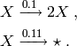

dsmts : a birth-death model¶
Overview¶
The cmepy.models.dsmts module defines the model DSMTS_001_01. This model is adapted from the Discrete Stochastic Models Test Suite .
This ‘birth-death’ model is defined as the system of reactions:

The model is initialised with 100 copies of the species  .
.
Source code¶
"""
Some models adapted from the Discrete Stochastic Models Test Suite.
See http://code.google.com/p/dsmts/
"""
from cmepy import model
DSMTS_001_01 = model.create(
name = 'Birth-death model (001), variant 01',
propensities = (
lambda *x: 0.1*x[0],
lambda *x: 0.11*x[0],
),
reactions = (
'X -> 2X',
'X -> *',
),
transitions = (
(1, ),
(-1, ),
),
species_counts = (
lambda *x : x[0],
),
species = (
'X',
),
shape = (200, ),
initial_state = (100, )
)